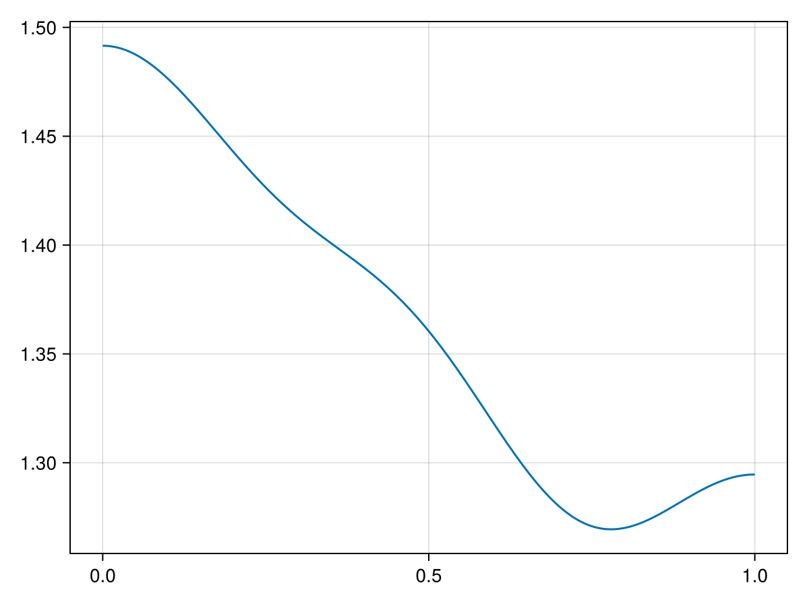

Nonlinear diffusion
We prove the existence of a steady-state of a reaction-diffusion equation with nonlinear diffusion
\[\begin{cases} \partial_t u = \Delta \Phi(u) + R(u), & x \in (0, 1), \\ \displaystyle \frac{\partial u}{\partial n} = 0, & x \in \{0, 1\}, \end{cases}\]
with
\[\begin{aligned} \Phi(u) &= u^2, \\ R(u) &= u - u^2 + g(x), \\ g(x) &= \frac{1}{2} + 3 \cos(\pi x) + 2 \cos(2 \pi x) - \cos(3 \pi x) + 6 \cos(4 \pi x). \end{aligned}\]
See the reference[1] for more details.
Step 1: Formulation
Φ(u) = u^2DΦ(u) = exact(2) * uR(u, g) = u - u^2 + gDR(u) = exact(1) - exact(2) * uF(u, g) = Laplacian() * Φ(u) + R(u, g)DF(u) = Laplacian() * Multiplication(DΦ(u)) + Multiplication(DR(u))Step 2: Approximation (floating-point arithmetic)
The approximate zero
using RadiiPolynomialg = Sequence(evensym(Fourier(4, π)), [1/2, 3/2, 1, -1/2, 3])K = 20u_init = Sequence(evensym(Fourier(K, π)), [1.362741344081890 ; 0.052107816731015 ; 0.008200891820525 ; -0.002635040629728 ; 0.007018830076427 ; zeros(K-4)])u_bar, newton_success = newton(u -> (F(u, g), DF(u)), u_init; verbose = true)Newton's method: Inf-norm, tol = 1.0e-12, ϵ = 2.220446049250313e-16, maxiter = 15, convergence criterion: |F(x)| ≤ tol
Iteration |F(x)| |DF(x)\F(x)| ETA (s)
-----------------------------------------------------------
0 | 3.4102e-01 | 5.0415e-04 | 0.0e+00
1 | 1.2425e-04 | 7.5988e-08 | 2.4e+00
2 | 7.0232e-12 | 4.0072e-15 | 1.1e+00
3 | 2.2204e-16 | 1.2934e-16 | 6.9e-01using CairoMakielines(LinRange(0, 1, 201), t -> real(u_bar(t)))
The approximate inverse
struct PseudoInverseLaplacian <: AbstractDiagonalOperator endRadiiPolynomial.getcoefficient(::PseudoInverseLaplacian, (codom, i)::Tuple{SymmetricSpace{<:Fourier},Integer}, (dom, j)::Tuple{SymmetricSpace{<:Fourier},Integer}) = (i == j) & !(i == j == 0) ? inv(- (frequency(dom) * exact(i))^2) : zero(frequency(dom))Π = Projection(evensym(Fourier(K, π)))Π_2K = Projection(evensym(Fourier(2K, π)))A_finite = interval(Π * inv(Π_2K * DF(u_bar) * Π_2K) * Π)M_cos = DΦ(u_bar)M_fou = Projection(Fourier(K, π)) * DΦ(u_bar)M_fou_inv = inv(M_fou)M_cos_inv_interval = interval(Π * M_fou_inv)A_tail = (Multiplication(M_cos_inv_interval) - interval(Π) * Multiplication(M_cos_inv_interval) * interval(Π)) * PseudoInverseLaplacian()A = A_finite + A_tailStep 3: Bounds (interval arithmetic)
g_interval = interval(g)u_bar_interval = interval(u_bar)#- Y boundY = norm(A * F(u_bar_interval, g_interval), 1)#- Z₁ boundZ₁_finite = opnorm(interval(Π_2K) - A * DF(u_bar_interval) * interval(Π_2K), 1)Z₁_tail = norm(exact(1) - M_cos_inv_interval * DΦ(u_bar_interval)) + norm(M_cos_inv_interval, 1) / (exact(K+1)^2 * interval(π)^2) * norm(DR(u_bar_interval), 1)Z₁ = max(Z₁_finite, Z₁_tail)#- Z₂ boundopnorm_A_Delta = max(opnorm(A * Laplacian() * interval(Π), 1), norm(M_cos_inv_interval, 1))Z₂ = exact(4) * opnorm_A_Delta#ie, contraction_success = interval_of_existence(Y, Z₁, Z₂, Inf; verbose = true)┌ Info: success: interval found
│ Y = [3.54237e-12, 3.54616e-12]_com
│ Z₁ = [0.000187102, 0.000187103]_com
│ Z₂ = [1.6233, 1.62331]_com
│ R = Inf
│ Δ = [0.999625, 0.999626]_com
└ roots = ([3.54288e-12, 3.54693e-12]_com, [1.23182, 1.23183]_com)Step 4: Conclusion
inf(ie) # smallest error3.5469200959526966e-12- 1M. Breden, Computer-assisted proofs for some nonlinear diffusion problems, Communications in Nonlinear Science and Numerical Simulation, 109 (2022), 106292.